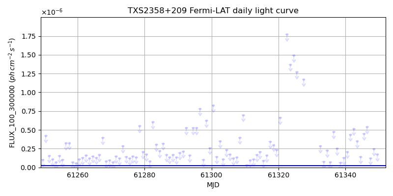
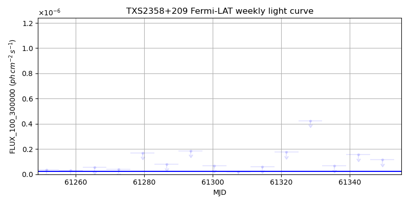
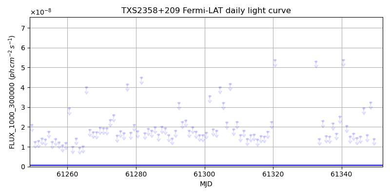
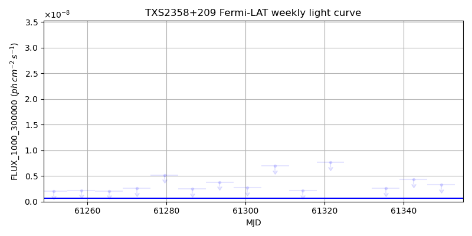

LAT Lightcurve site: https://fermi.gsfc.nasa.gov/ssc/data/access/lat/msl_lc/source/TXS_2358p209
NED: Query
Time of last update of this page: UT: 2026-11-06 16:10 (MJD: 61350.674)
| Property | Value |
|---|---|
| R.A. | 0:01:32.40 |
| Dec. | 21:13:37.2 |
| z | 1.106 |
| 3FGL SpectrumType | LogParabola |
| 3FGL PL Index | |
| 3FGL Flux_100_300000 | 2.29e-08 1 / (s cm2) |
| 3FGL Flux_1000_300000 | 6.11e-10 1 / (s cm2) |
| 3FGL Flux >200 GeV | 3.15e-17 1 / (s cm2) |
| 3FGL Extrap. Crab >200 GeV | 0.00 |
| 3FGL Flux After EBL Absorption >200GeV | 6.67e-19 1 / (s cm2) |
| 3FGL EBL Crab Fraction >200GeV | 0.00 |

| MJD | dMJD | Flux | dFlux | Frac3FGL | FracCrab>200GeV | EBLFracCrab>200GeV |
|---|---|---|---|---|---|---|
| 61345.50 | 0.50 | 4.50e-07 | 0.00e+00 | 0.00 | 0.00 | 0.00 |
| 61346.50 | 0.50 | 5.40e-07 | 0.00e+00 | 0.00 | 0.00 | 0.00 |
| 61347.50 | 0.50 | 1.24e-07 | 0.00e+00 | 0.00 | 0.00 | 0.00 |
| 61348.50 | 0.50 | 2.44e-07 | 0.00e+00 | 0.00 | 0.00 | 0.00 |
| 61349.50 | 0.50 | 1.74e-07 | 0.00e+00 | 0.00 | 0.00 | 0.00 |

| MJD | dMJD | Flux | dFlux | Frac3FGL | FracCrab>200GeV | EBLFracCrab>200GeV |
|---|---|---|---|---|---|---|
| 61314.50 | 3.50 | 6.09e-08 | 0.00e+00 | 0.00 | 0.00 | 0.00 |
| 61321.50 | 3.50 | 1.75e-07 | 0.00e+00 | 0.00 | 0.00 | 0.00 |
| 61328.50 | 3.50 | 4.25e-07 | 0.00e+00 | 0.00 | 0.00 | 0.00 |
| 61335.50 | 3.50 | 6.79e-08 | 0.00e+00 | 0.00 | 0.00 | 0.00 |
| 61342.50 | 3.50 | 1.55e-07 | 0.00e+00 | 0.00 | 0.00 | 0.00 |

| MJD | dMJD | Flux | dFlux | Frac3FGL | FracCrab>200GeV | EBLFracCrab>200GeV |
|---|---|---|---|---|---|---|
| 61345.50 | 0.50 | 1.51e-08 | 0.00e+00 | 0.00 | 0.00 | 0.00 |
| 61346.50 | 0.50 | 2.95e-08 | 0.00e+00 | 0.00 | 0.00 | 0.00 |
| 61347.50 | 0.50 | 1.59e-08 | 0.00e+00 | 0.00 | 0.00 | 0.00 |
| 61348.50 | 0.50 | 3.24e-08 | 0.00e+00 | 0.00 | 0.00 | 0.00 |
| 61349.50 | 0.50 | 1.41e-08 | 0.00e+00 | 0.00 | 0.00 | 0.00 |

| MJD | dMJD | Flux | dFlux | Frac3FGL | FracCrab>200GeV | EBLFracCrab>200GeV |
|---|---|---|---|---|---|---|
| 61314.50 | 3.50 | 2.16e-09 | 0.00e+00 | 0.00 | 0.00 | 0.00 |
| 61321.50 | 3.50 | 7.64e-09 | 0.00e+00 | 0.00 | 0.00 | 0.00 |
| 61328.50 | 3.50 | 1.08e-07 | 0.00e+00 | 0.00 | 0.00 | 0.00 |
| 61335.50 | 3.50 | 2.63e-09 | 0.00e+00 | 0.00 | 0.00 | 0.00 |
| 61342.50 | 3.50 | 4.32e-09 | 0.00e+00 | 0.00 | 0.00 | 0.00 |
--------------------------------------------------------- Using user-supplied coords: 0:01:32.40 21:13:37.2 2000 --------------------------------------------------------- FLWO UT night of: 2026-11-07 Local Sid. @ Midnight: 02:42 Sunset (-15.0) (local, UT): 18:39 01:39 Sunrise (-15.0) (local, UT): 05:36 12:36 Moonrise (local, UT): 05:16 12:16 Moonset (local, UT): Moon phase: 0.04 --------------------------------------------------------- AzTime LSID UT Obj_el Obj_az Mn_el Mn_az Sep. --------------------------------------------------------- 18:39 21:20 01:39 52.4 95.7 -35.5 278.9 162.9 19:09 21:50 02:09 58.8 101.0 -41.6 283.5 162.8 19:39 22:20 02:39 65.0 108.0 -47.5 288.8 162.6 20:09 22:50 03:09 70.9 118.1 -53.3 295.3 162.4 20:39 23:20 03:39 76.0 134.9 -58.7 303.4 162.2 21:09 23:50 04:09 79.4 164.4 -63.5 313.9 161.9 21:39 00:20 04:39 79.0 202.2 -67.5 328.0 161.7 22:09 00:50 05:09 75.2 229.0 -70.0 346.2 161.5 22:39 01:20 05:39 69.8 244.1 -70.5 6.9 161.3 23:09 01:51 06:09 63.8 253.5 -68.8 26.6 161.0 23:39 02:21 06:39 57.6 260.1 -65.4 42.5 160.8 00:09 02:51 07:09 51.3 265.2 -60.9 54.4 160.6 00:39 03:21 07:39 44.9 269.5 -55.8 63.5 160.3 01:09 03:51 08:09 38.5 273.3 -50.2 70.6 160.1 01:39 04:21 08:39 32.1 276.8 -44.4 76.4 159.9 02:09 04:51 09:09 25.8 280.3 -38.4 81.4 159.7 02:39 05:21 09:39 19.5 283.7 -32.4 85.8 159.5 03:09 05:51 10:09 13.4 287.1 -26.3 89.9 159.3 03:39 06:21 10:39 7.4 290.7 -20.2 93.7 159.1 04:09 06:51 11:09 1.7 294.5 -14.2 97.5 158.9 04:39 07:21 11:39 -2.9 298.5 -8.1 101.2 158.7 05:09 07:52 12:09 -9.9 302.8 -1.2 105.0 158.6 05:36 08:19 12:36 -14.7 307.2 3.4 108.6 158.4 --------------------------------------------------------- Dark hours >55 deg.: 5.00 srcstart (UT): 2026-11-07 01:51 srcend (UT): 2026-11-07 06:51